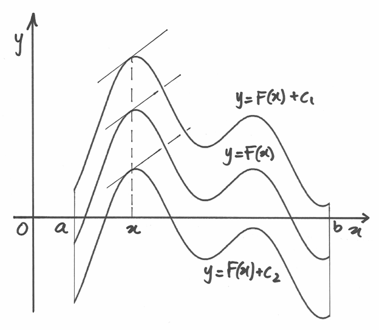
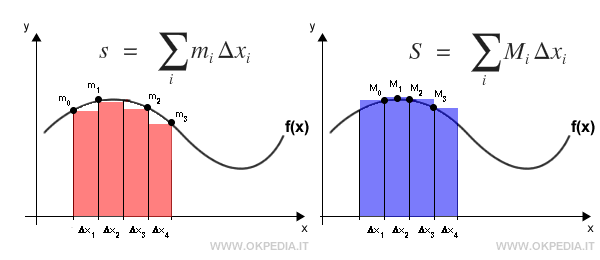
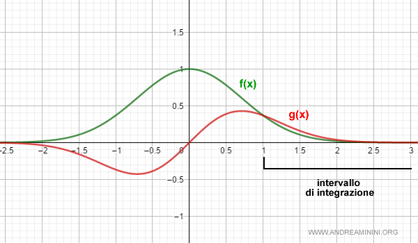

Matematica
Introduzione: Il Fascino degli Integrali
Lo studio della matematica del quinto anno ci fornisce gli strumenti logici essenziali per comprendere l'informatica, gli algoritmi e l'analisi dei dati. Tra tutti gli argomenti trattati, gli integrali sono senza dubbio quelli che mi hanno più interressato.Trovo affascinante come permettano di trovare un ordine nel caos, calcolando l'area di figure dai contorni imprevedibili e sommando l'infinitamente piccolo per ottenere risultati concreti.
1. Integrali Indefiniti
L'integrale indefinito rappresenta l'operazione inversa della derivata. Data una funzione \( f(x) \), calcolare il suo integrale indefinito significa trovare l'insieme di tutte le funzioni \( F(x) \) (chiamate primitive) la cui derivata è uguale a \( f(x) \).
- \( \int \): Simbolo di integrale.
- \( f(x) \): Funzione integranda.
- \( F(x) \): Primitiva della funzione (\( F'(x) = f(x) \)).
- \( c \): Costante d'integrazione.

2. Integrali Definiti
Mentre l'integrale indefinito restituisce una famiglia di funzioni, l'integrale definito restituisce un numero reale. Geometricamente, se la funzione è positiva in un intervallo \( [a, b] \), rappresenta l'area della regione di piano compresa tra il grafico della funzione, l'asse delle ascisse e le rette verticali \( x = a \) e \( x = b \).
- \( a \) e \( b \): Estremi di integrazione (inferiore e superiore).
- \( F(b) - F(a) \): Differenza del valore della primitiva negli estremi.

3. Integrali Impropri
Gli integrali impropri (o generalizzati) estendono il concetto di integrale definito a casi "estremi". Si utilizzano quando si vuole calcolare l'area di una regione che si estende all'infinito, ad esempio quando l'intervallo è illimitato o la funzione presenta un asintoto verticale. Per risolverli si utilizza il concetto di limite.

Argomenti principali del programma:
- Studio delle funzioni in due variabili
- Integrali indefiniti
- Integrali definiti
- Integrali impropri
- Calcolo Combinatorio
- Probabilità (discreta)